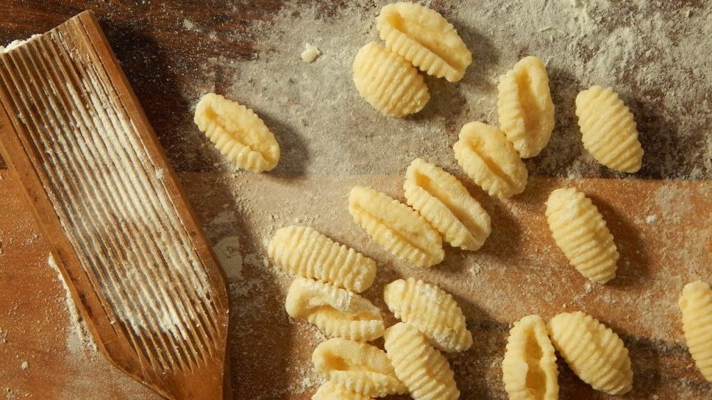
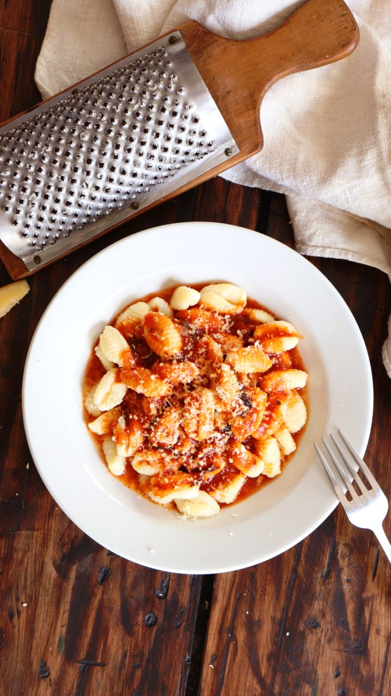
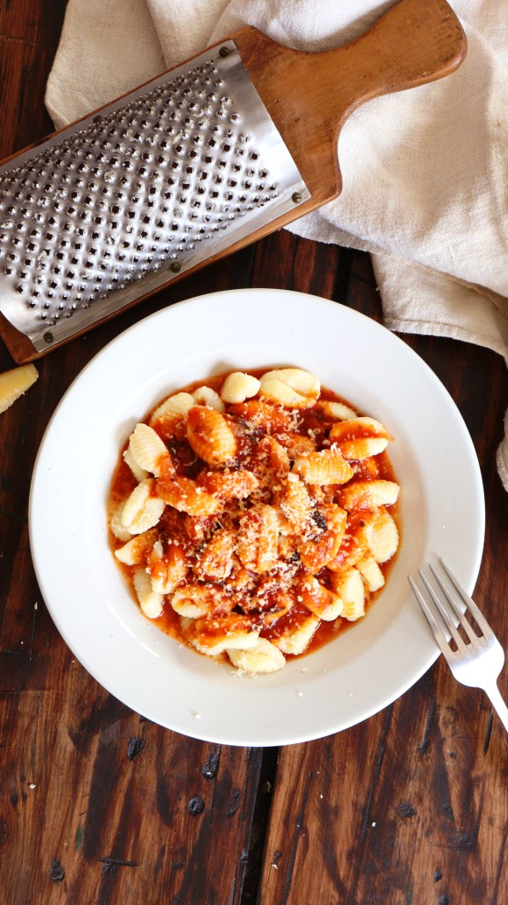

Podemos encontrar muchas recetas de ñoquis de papas argentinos y, en este caso, te enseñaremos la masa básica y tradicional que seguramente no te va a fallar. Además, te enseñamos cómo hacer todo el proceso con una receta paso a paso.
La gran diferencia que vas a encontrar con otras masas para ñoquis, y que tendrás que tomar en cuenta, es la forma de cocinar las papas.
Sigue leyendo y aprende.
INGREDIENTES
Para 4 porciones.

1 1/2 Kg de papas
2 cucharadas de sal gruesa
2 huevos
Cantidad a gusto de pimienta y nuez moscada
1 cucharada de polvo para hornear
700 g de harina
1 chorrito de aceite
Preparación paso a paso
Lavar y pelar las papas. Llenar una cacerola con agua fría y agregar las papas y la mitad de la sal gruesa. Hervir 20 minutos, o hasta que las papas estén tiernas. Escurrirlas y dejarlas enfriar un poquito (no del todo).
Hacer un puré y dejarlo enfriar.
Formar una corona con el puré. Agregar en el centro los huevos, sal, pimienta, nuez moscada y el polvo leudante. Incorporar la harina de a poco, y una con las manos, ayudándose con una espátula, de afuera hacia adentro, hasta formar una masa homogénea. Dejar descansar 20 minutos.
Hacer rollitos con la masa de un centímetro y medio de grosor. Cortarlos en trocitos de 2 centímetros y darles la forma clásica con el marcador de ñoquis, o con el tenedor.
Cocinar los ñoquis en agua hirviendo con un chorrito de aceite y la sal gruesa restante. Estarán listos cuando suban a la superficie. Retirarlos con una espumadera. Servir solos o con la salsa que se desee.
 
